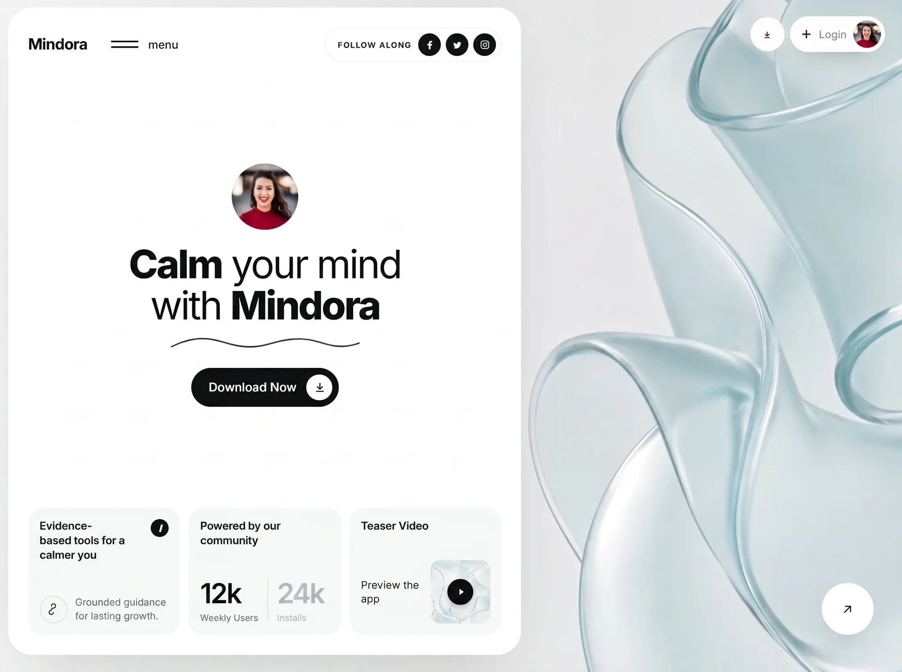

Mindora
Wellnesswellnessyilai-ai 公开页面
收录时间：2026-09-02正文：24,080 字符

本地预览图 · webp
完整提示词
Build a single, standalone, production-ready HTML file called `index.html` containing ONE full-viewport hero section. Everything (CSS + JS) must be inline in that one file — no build step, no frameworks, no external libraries, no local asset files. All media is hotlinked from the exact URLs given below; never download, re-host, or substitute them.
═══════════════════════════════════════
1. DOCUMENT HEAD
═══════════════════════════════════════
- `<!DOCTYPE html>`, `<html lang="en">`
- `<meta charset="UTF-8">`
- `<meta name="viewport" content="width=device-width, initial-scale=1, viewport-fit=cover">`
- `<title>Mindora — Calm your mind</title>` (em dash)
- Font: Inter from Google Fonts, weights 400;500;600;700;800, with `preconnect` to fonts.googleapis.com and fonts.gstatic.com (crossorigin).
`<link href="https://fonts.googleapis.com/css2?family=Inter:wght@400;500;600;700;800&display=swap" rel="stylesheet">`
- Body font stack: `"Inter",-apple-system,BlinkMacSystemFont,"Segoe UI",Roboto,Helvetica,Arial,sans-serif`
═══════════════════════════════════════
2. EXACT ASSET URLS (use verbatim, do not alter)
═══════════════════════════════════════
BACKGROUND VIDEO (mp4, 10s, 1080p, 16:9, silent, loops):
https://d8j0ntlcm91z4.cloudfront.net/user_38xzZboKViGWJOttwIXH07lWA1P/hf_20260831_234904_80126b6f-a9f2-4c64-904f-bbecd6fb479a.mp4
VIDEO POSTER (first frame — prevents flash before playback):
https://images.higgs.ai/?default=1&output=webp&url=https%3A%2F%2Fd8j0ntlcm91z4.cloudfront.net%2Fuser_38xzZboKViGWJOttwIXH07lWA1P%2Fhf_20260831_232824_93a0252b-e9f2-432f-9961-555a2e458100.png&w=1920&q=85
TEASER THUMBNAIL (3rd card, bottom row):
https://images.higgs.ai/?default=1&output=webp&url=https%3A%2F%2Fd8j0ntlcm91z4.cloudfront.net%2Fuser_38xzZboKViGWJOttwIXH07lWA1P%2Fhf_20260831_233659_e22fa9db-261e-4bf3-82c2-b5626c27e820.png&w=1920&q=85
AVATAR — centre of panel (400px):
https://images.unsplash.com/photo-1494790108377-be9c29b29330?w=400&h=400&fit=crop&crop=faces&q=80
AVATAR — Login chip (160px, same photo):
https://images.unsplash.com/photo-1494790108377-be9c29b29330?w=160&h=160&fit=crop&crop=faces&q=80
In HTML attributes, escape the `&` in these URLs as `&` (leave the video/poster URLs' ampersands as-is in the `poster` attribute).
═══════════════════════════════════════
3. DESIGN TOKENS (`:root`)
═══════════════════════════════════════
--ink:#0d0f0f; --ink-soft:#5b6260; --line:#e8ebea;
--panel:#ffffff; --box:#f5f7f6;
--radius-panel:30px; --radius-box:18px;
--pad:clamp(18px, 2.2vw, 34px);
Global resets:
- `*,*::before,*::after{box-sizing:border-box}`
- body: color var(--ink); background #eef2f1; -webkit-font-smoothing:antialiased; overflow-x:hidden; -webkit-tap-highlight-color:transparent
- `html.nav-lock,body.nav-lock{overflow:hidden}`
- `img{max-width:100%;display:block}`
- `button{font:inherit;color:inherit;border:0;background:none;cursor:pointer}`
- `a{text-decoration:none;color:inherit}`
═══════════════════════════════════════
4. STRUCTURE
═══════════════════════════════════════
<section class="hero"> → full viewport, video behind everything
<video class="hero__bg"> → autoplay muted loop playsinline preload="auto" + poster, <source type="video/mp4">
<div class="hero__scrim"> → white gradient wash for text legibility
<div class="hero__inner"> → 2-column grid
<div class="panel"> → COLUMN 1: the white boxed container
<header class="topbar"> → brand + hamburger | "Follow along" pill + 3 socials
<div class="stage"> → avatar → headline → squiggle → CTA (vertically centred)
<div class="cards"> → bottom row of 3 boxes
<div class="side"> → COLUMN 2: floating controls over the video
</section>
<div class="navmenu" id="navmenu"> → nav overlay, sibling of .hero, direct child of body
<script> → two IIFEs
CRITICAL: `.navmenu` must be OUTSIDE `.hero` (which has `overflow:hidden`) so the fixed overlay is never clipped.
═══════════════════════════════════════
5. LAYOUT CSS
═══════════════════════════════════════
.hero{position:relative;height:100vh;height:100svh;min-height:640px;width:100%;overflow:hidden;isolation:isolate}
.hero__bg{position:absolute;inset:0;width:100%;height:100%;object-fit:cover;z-index:-2}
.hero__scrim{position:absolute;inset:0;z-index:-1;
background:linear-gradient(90deg,rgba(255,255,255,.55) 0%,rgba(255,255,255,.10) 45%,rgba(255,255,255,0) 70%)}
.hero__inner{position:relative;height:100%;width:100%;padding:clamp(10px,1.1vw,20px);
display:grid;grid-template-columns:minmax(0,1.02fr) minmax(0,0.72fr);gap:clamp(10px,1.1vw,20px)}
.panel{position:relative;background:var(--panel);border-radius:var(--radius-panel);padding:var(--pad);
display:flex;flex-direction:column;min-height:0;box-shadow:0 24px 60px -30px rgba(16,32,28,.28)}
═══════════════════════════════════════
6. TOPBAR
═══════════════════════════════════════
.topbar{display:flex;align-items:center;justify-content:space-between;gap:16px;flex:0 0 auto}
.brand{font-size:clamp(19px,1.55vw,26px);font-weight:700;letter-spacing:-.03em} → text "Mindora"
.nav-left{display:flex;align-items:center;gap:clamp(18px,2.6vw,44px)}
.menu{display:flex;align-items:center;gap:12px;padding:8px 4px;margin:-8px -4px;position:relative;z-index:130}
.menu__bars{display:flex;flex-direction:column;gap:5px;width:34px} → exactly TWO <span> bars
.menu__bars span{display:block;height:2px;background:var(--ink);border-radius:2px;transform-origin:center;
transition:transform .5s cubic-bezier(.16,1,.3,1),width .4s cubic-bezier(.16,1,.3,1)}
.menu:hover .menu__bars span:nth-child(2){width:70%}
.menu.is-active .menu__bars span{width:100%}
.menu.is-active .menu__bars span:nth-child(1){transform:translateY(3.5px) rotate(45deg)}
.menu.is-active .menu__bars span:nth-child(2){transform:translateY(-3.5px) rotate(-45deg)}
.menu__label{font-size:clamp(14px,1.05vw,17px);font-weight:500} → lowercase text "menu"
.connect{display:flex;align-items:center;gap:clamp(8px,.7vw,12px);border:1px solid var(--line);
border-radius:999px;padding:6px 6px 6px clamp(14px,1.3vw,22px)}
.connect__label{font-size:clamp(10px,.78vw,12.5px);font-weight:600;letter-spacing:.09em;
text-transform:uppercase;white-space:nowrap} → text "Follow along"
.socials{display:flex;gap:6px}
.social{width:clamp(28px,2.15vw,36px);height:clamp(28px,2.15vw,36px);border-radius:50%;
background:var(--ink);color:#fff;display:grid;place-items:center}
.social svg{width:52%;height:52%;fill:currentColor}
→ 3 anchors: Facebook, Twitter, Instagram, each with aria-label and an inline 24×24 filled SVG glyph.
═══════════════════════════════════════
7. STAGE (centre block)
═══════════════════════════════════════
.stage{flex:1 1 auto;min-height:0;display:flex;flex-direction:column;align-items:center;
justify-content:center;text-align:center;position:relative;padding:clamp(12px,2vh,32px) 0}
.avatar{width:clamp(72px,7.4vw,124px);height:clamp(72px,7.4vw,124px);border-radius:50%;overflow:hidden;
background:linear-gradient(150deg,#dfe7e5,#c3d2cf);flex:0 0 auto}
.avatar img{width:100%;height:100%;object-fit:cover} → alt="Mindora member"
.headline{margin:clamp(14px,2.2vh,30px) 0 0;font-size:clamp(34px,4.35vw,72px);line-height:1.03;
letter-spacing:-.045em;font-weight:400}
.headline b{font-weight:800}
Markup exactly: <h1 class="headline"><b>Calm</b> your mind<br />with <b>Mindora</b></h1>
.squiggle{width:clamp(180px,21vw,330px);margin:clamp(8px,1.4vh,18px) auto 0;display:block;color:var(--ink)}
Inline SVG, viewBox="0 0 320 26", aria-hidden="true", single path:
d="M2 20C34 4 60 3 88 12s52 12 80 3 54-12 82-3 46 10 68 2"
stroke="currentColor" stroke-width="2" stroke-linecap="round" fill="none"
.cta{margin-top:clamp(16px,2.6vh,36px);display:inline-flex;align-items:center;gap:clamp(12px,1.1vw,20px);
background:var(--ink);color:#fff;border-radius:999px;padding:8px 8px 8px clamp(22px,1.9vw,34px);
font-size:clamp(15px,1.15vw,19px);font-weight:500;transition:transform .25s ease,box-shadow .25s ease}
.cta:hover{transform:translateY(-2px);box-shadow:0 14px 28px -14px rgba(0,0,0,.6)}
.cta__icon{width:clamp(32px,2.5vw,42px);height:clamp(32px,2.5vw,42px);border-radius:50%;background:#fff;
color:var(--ink);display:grid;place-items:center;flex:0 0 auto}
.cta__icon svg{width:48%;height:48%}
→ Label "Download Now" + circular white icon holding a download arrow SVG
(path "M12 4v11M7 11l5 5 5-5M5 20h14", stroke-width 2, round caps/joins, fill none)
NOTE: there is NO "Scroll" circle/dial anywhere in this design.
═══════════════════════════════════════
8. BOTTOM ROW — 3 CARDS
═══════════════════════════════════════
.cards{flex:0 0 auto;display:grid;grid-template-columns:repeat(3,minmax(0,1fr));gap:clamp(10px,.95vw,18px)}
.card{background:var(--box);border-radius:var(--radius-box);padding:clamp(14px,1.25vw,24px);
display:flex;flex-direction:column;justify-content:space-between;gap:clamp(12px,1.6vh,22px);
min-height:clamp(150px,19vh,215px)}
.card__top{display:flex;align-items:flex-start;justify-content:space-between;gap:10px}
.card__title{font-size:clamp(13.5px,1.02vw,17px);font-weight:600;line-height:1.3;letter-spacing:-.015em;
margin:0;flex:1 1 auto;min-width:0;text-wrap:pretty}
.info{width:clamp(22px,1.6vw,27px);height:clamp(22px,1.6vw,27px);border-radius:50%;background:var(--ink);
color:#fff;display:grid;place-items:center;font-size:12px;font-weight:700;font-style:italic;flex:0 0 auto}
.card__row{display:flex;align-items:center;gap:clamp(10px,.85vw,15px)}
.bubble{width:clamp(34px,2.9vw,48px);height:clamp(34px,2.9vw,48px);border:1px solid #d9dedc;border-radius:50%;
display:grid;place-items:center;flex:0 0 auto;color:var(--ink)}
.bubble svg{width:50%;height:50%}
.card__note{font-size:clamp(12px,.88vw,14.5px);line-height:1.4;color:var(--ink-soft);margin:0;
flex:1 1 auto;min-width:0;text-wrap:pretty}
CARD 1 — title "Evidence-based tools for a calmer you" + an italic "i" info badge (aria-hidden).
Below: bubble containing a squiggly-path icon
(path "M8 5a4 4 0 1 1 4 4 4 4 0 0 0-4 4 4 4 0 1 0 4 4", stroke-width 1.6, round caps/joins, fill none)
beside note "Grounded guidance for lasting growth." (single flowing strings — no <br>)
CARD 2 — title "Powered by our community", then a stats row:
.stats{display:flex;align-items:flex-end;gap:clamp(10px,1vw,18px)}
.stat__num{font-size:clamp(30px,3.05vw,50px);font-weight:600;letter-spacing:-.05em;line-height:1}
.stat--muted .stat__num,.stat--muted .stat__label{color:#b6bfbc}
.stat__label{display:block;margin-top:6px;font-size:clamp(11px,.8vw,13.5px);color:var(--ink-soft)}
.stats__div{width:1px;align-self:stretch;background:#dfe4e2;margin-bottom:4px}
→ "12k" / "Weekly Users" | vertical divider | "24k" / "Installs" (muted, class stat--muted)
CARD 3 — title "Teaser Video", then:
.teaser{display:flex;align-items:center;gap:clamp(8px,.8vw,14px);justify-content:space-between}
.teaser__text{font-size:clamp(13px,1vw,16px);line-height:1.3;color:var(--ink);margin:0}
→ "Preview the<br />app"
.teaser__thumb{position:relative;width:clamp(74px,6.4vw,106px);aspect-ratio:1/1.06;border-radius:12px;
overflow:hidden;flex:0 0 auto;background:#e3ecea}
.teaser__thumb img{width:100%;height:100%;object-fit:cover} → teaser URL, loading="lazy", alt="Mindora app preview"
.play{position:absolute;inset:0;margin:auto;width:32px;height:32px;border-radius:50%;background:var(--ink);
color:#fff;display:grid;place-items:center;box-shadow:0 4px 12px -4px rgba(0,0,0,.5)}
.play svg{width:12px;height:12px;fill:currentColor;margin-left:2px} → triangle path "M8 5v14l11-7z", aria-label="Play video"
═══════════════════════════════════════
9. COLUMN 2 — FLOATING CONTROLS OVER VIDEO
═══════════════════════════════════════
.side{position:relative;min-height:0;padding:clamp(6px,1vw,18px)}
.side__top{position:absolute;top:clamp(6px,1vw,18px);right:clamp(6px,1vw,18px);
display:flex;align-items:center;gap:clamp(6px,.6vw,10px)}
.pill-btn{width:clamp(42px,3.4vw,56px);height:clamp(42px,3.4vw,56px);border-radius:50%;
background:rgba(255,255,255,.92);-webkit-backdrop-filter:blur(10px);backdrop-filter:blur(10px);
display:grid;place-items:center;box-shadow:0 10px 26px -14px rgba(10,28,24,.45)}
.pill-btn svg{width:38%;height:38%} → download arrow, aria-label="Download"
.account{display:flex;align-items:center;gap:clamp(8px,.7vw,14px);background:rgba(255,255,255,.92);
-webkit-backdrop-filter:blur(10px);backdrop-filter:blur(10px);border-radius:999px;
padding:5px 5px 5px clamp(12px,1vw,18px);box-shadow:0 10px 26px -14px rgba(10,28,24,.45)}
.account__plus{width:16px;height:16px;flex:0 0 auto} → plus icon "M12 5v14M5 12h14", stroke-width 2.2
.account__label{font-size:clamp(13px,1vw,16px);color:#7d8785} → "Login"
.account__avatar{width:clamp(34px,2.7vw,44px);height:clamp(34px,2.7vw,44px);border-radius:50%;overflow:hidden;
background:linear-gradient(150deg,#dfe7e5,#c3d2cf);flex:0 0 auto}
.account__avatar img{width:100%;height:100%;object-fit:cover} → 160px avatar URL, alt=""
.arrow-fab{position:absolute;right:clamp(10px,2.2vw,44px);bottom:clamp(10px,2.2vw,44px);
width:clamp(64px,5.6vw,96px);height:clamp(64px,5.6vw,96px);border-radius:50%;background:#fff;
display:grid;place-items:center;box-shadow:0 18px 40px -20px rgba(10,28,24,.5);transition:transform .3s ease}
.arrow-fab:hover{transform:rotate(45deg)}
.arrow-fab svg{width:34%;height:34%} → ↗ arrow "M7 17L17 7M8 7h9v9", aria-label="Explore more"
═══════════════════════════════════════
10. PAGE-LOAD ENTRY ANIMATION (transform/opacity only — must not affect layout)
═══════════════════════════════════════
@keyframes in-up{from{opacity:0;transform:translate3d(0,18px,0)}to{opacity:1;transform:translate3d(0,0,0)}}
@keyframes in-fade{from{opacity:0}to{opacity:1}}
@keyframes in-bg{from{opacity:0;transform:scale(1.06)}to{opacity:1;transform:scale(1)}}
@keyframes in-draw{from{stroke-dashoffset:420}to{stroke-dashoffset:0}}
.hero__bg{transform-origin:center;animation:in-bg 1.35s cubic-bezier(.16,1,.3,1) both}
.hero__scrim{animation:in-fade 1s ease both .08s}
Apply `animation:in-up .78s cubic-bezier(.16,1,.3,1) both` to this exact selector group:
.topbar .brand, .topbar .menu, .topbar .connect, .stage .avatar, .stage .headline, .stage .squiggle,
.stage .cta, .cards .card, .side .pill-btn, .side .account, .side .arrow-fab
Stagger delays (exact):
brand .06s · menu .14s · connect .22s · avatar .18s · headline .28s · squiggle .38s · cta .48s ·
card:nth-child(1) .42s · card:nth-child(2) .52s · card:nth-child(3) .62s ·
pill-btn .2s · account .3s · arrow-fab .7s
Squiggle self-draws:
.stage .squiggle path{stroke-dasharray:420;stroke-dashoffset:420;
animation:in-draw 1.15s cubic-bezier(.16,1,.3,1) both .48s}
.anim-done{animation:none !important} → applied by JS after each element's animationend
═══════════════════════════════════════
11. NAV OVERLAY + PREMIUM OPEN/CLOSE ANIMATION
═══════════════════════════════════════
The signature easing everywhere is cubic-bezier(.16,1,.3,1) (expo-out) — it decelerates hard into place, which is what makes it read as premium. Do not substitute `ease`.
.navmenu{position:fixed;inset:0;z-index:120;visibility:hidden;transition:visibility 0s linear .5s}
.navmenu.is-open{visibility:visible;transition-delay:0s}
.navmenu__scrim{position:absolute;inset:0;background:rgba(10,22,19,.34);
-webkit-backdrop-filter:blur(9px) saturate(1.1);backdrop-filter:blur(9px) saturate(1.1);
opacity:0;transition:opacity .5s cubic-bezier(.22,1,.36,1)}
.navmenu.is-open .navmenu__scrim{opacity:1}
.navmenu__sheet{position:absolute;top:0;left:0;bottom:0;width:min(430px,88vw);background:var(--panel);
border-radius:0 clamp(20px,2.4vw,34px) clamp(20px,2.4vw,34px) 0;
padding:clamp(20px,3vw,38px) clamp(20px,3vw,38px) max(clamp(18px,2.4vw,32px),env(safe-area-inset-bottom));
display:flex;flex-direction:column;transform:translate3d(-102%,0,0);
transition:transform .62s cubic-bezier(.16,1,.3,1);box-shadow:44px 0 90px -44px rgba(8,24,20,.5);
overflow-y:auto;overscroll-behavior:contain;will-change:transform}
.navmenu.is-open .navmenu__sheet{transform:translate3d(0,0,0)}
.navmenu:not(.is-open) .navmenu__sheet{transition-duration:.44s} → closes faster than it opens
.navmenu__head{display:flex;align-items:center;justify-content:space-between;gap:16px;flex:0 0 auto}
.navmenu__brand{font-size:clamp(19px,1.55vw,26px);font-weight:700;letter-spacing:-.03em} → "Mindora"
.navmenu__close{width:44px;height:44px;border:1px solid var(--line);border-radius:50%;display:grid;
place-items:center;flex:0 0 auto;transition:transform .4s cubic-bezier(.16,1,.3,1),background .3s ease}
.navmenu__close:hover{background:var(--box);transform:rotate(90deg)}
.navmenu__close svg{width:15px;height:15px} → X path "M5 5l14 14M19 5L5 19", stroke-width 2.2
.navmenu__list{list-style:none;margin:clamp(22px,4vh,44px) 0 0;padding:0;flex:1 1 auto}
.navmenu__list li{border-bottom:1px solid var(--line);opacity:0;transform:translateY(22px);
transition:opacity .45s ease,transform .6s cubic-bezier(.16,1,.3,1)}
.navmenu.is-open .navmenu__list li{opacity:1;transform:none}
Stagger via nth-child transition-delay: .13s .19s .25s .31s .37s .43s
.navmenu__link{display:flex;align-items:center;justify-content:space-between;gap:14px;
padding:clamp(12px,1.7vh,19px) 2px;font-size:clamp(21px,4.4vw,30px);font-weight:500;
letter-spacing:-.035em;transition:padding-left .4s cubic-bezier(.16,1,.3,1)}
.navmenu__link:hover{padding-left:12px}
.navmenu__link svg{width:17px;height:17px;flex:0 0 auto;opacity:0;transform:translateX(-8px);
transition:opacity .35s ease,transform .35s cubic-bezier(.16,1,.3,1)}
.navmenu__link:hover svg{opacity:1;transform:none}
Six links, each with a trailing ↗ SVG ("M7 17L17 7M8 7h9v9"):
Home · Programs · Sessions · Journal · Pricing · Support
.navmenu__foot{flex:0 0 auto;margin-top:clamp(20px,3vh,34px);display:flex;flex-direction:column;
gap:clamp(13px,2vh,19px);opacity:0;transform:translateY(18px);
transition:opacity .45s ease,transform .6s cubic-bezier(.16,1,.3,1)}
.navmenu.is-open .navmenu__foot{opacity:1;transform:none;transition-delay:.5s}
.navmenu__foot-label{font-size:11.5px;font-weight:600;letter-spacing:.09em;text-transform:uppercase;
color:var(--ink-soft)} → "Follow along"
.navmenu__foot .cta{margin-top:0;align-self:flex-start}
→ Footer contains: label, the same 3 social circles, and a "Download Now" .cta pill.
Overlay container attrs: id="navmenu" role="dialog" aria-modal="true" aria-label="Site menu"
═══════════════════════════════════════
12. JAVASCRIPT (two vanilla IIFEs, no libraries)
═══════════════════════════════════════
IIFE #1 — entry-animation cleanup:
Query the same selector group from §10; on each element's `animationend` (guarding `e.target === el`), add class `anim-done` so the load animation can never re-fire or fight later transitions.
IIFE #2 — nav controller with a single `setOpen(open)` function that:
- early-returns if the state is unchanged
- toggles `is-open` on .navmenu and `is-active` on .menu
- sets `aria-expanded` true/false and swaps `aria-label` between "Close menu" and "Open menu"
- toggles class `nav-lock` on BOTH documentElement and body (scroll lock)
- on open: after a 360ms timeout, focuses the first nav link (fallback: close button)
- on close: returns focus to the hamburger button
Wire: hamburger click toggles · close button click closes · scrim click closes · every nav link click closes.
Keydown handler (no-op unless open): `Escape` closes; `Tab` implements a focus trap by cycling between the first and last `a[href],button` inside the overlay (handle shiftKey for reverse).
═══════════════════════════════════════
13. RESPONSIVE — exact breakpoints, in this order
═══════════════════════════════════════
@media (max-width:1100px)
.hero__inner{grid-template-columns:minmax(0,1fr)} → single column; panel spans full width
.side{position:absolute;inset:clamp(10px,1.1vw,20px);pointer-events:none}
.side__top{pointer-events:auto} → controls float over the panel
.arrow-fab{display:none}
.connect__label{display:none} .connect{padding:6px} → pill collapses to icons only
.panel{padding-top:clamp(64px,9vw,90px)} → clears the floating controls
@media (max-width:820px)
.hero{height:auto;min-height:100svh} → allowed to grow and scroll
.hero__scrim{background:linear-gradient(180deg,rgba(255,255,255,.35),rgba(255,255,255,.05))}
.hero__inner{padding:12px;min-height:calc(100svh - 24px)} → REQUIRED so the panel still fills the screen
.panel{padding:16px;padding-top:70px;border-radius:26px}
.menu__label{display:none} .menu__bars{width:26px}
.stage{padding:34px 0 28px}
.headline{font-size:clamp(32px,9vw,46px)}
.squiggle{width:min(72%,300px)}
.cards{grid-template-columns:repeat(auto-fit,minmax(200px,1fr))} → 3-up tablet, 2-up mid, 1-up phone
.card{min-height:0}
.side__top{top:22px;right:22px}
.navmenu__sheet{width:100%;border-radius:0;padding-top:max(clamp(20px,3vw,38px),env(safe-area-inset-top))}
@media (max-width:420px)
.brand{font-size:18px} .headline{font-size:clamp(29px,8.6vw,38px)} .account__label{display:none}
.stats{gap:12px} .stat__num{font-size:clamp(28px,9vw,40px)} .teaser__thumb{width:84px}
@media (max-width:360px)
.hero__inner{padding:8px} .panel{padding:14px;padding-top:66px} .brand{font-size:16.5px}
.social{width:30px;height:30px} .socials{gap:5px} .cta{font-size:14px;padding-left:18px}
.card{padding:13px} .navmenu__link{font-size:20px}
@media (max-height:540px) and (orientation:landscape)
.hero{height:auto;min-height:0} .stage{padding:22px 0} .avatar{width:58px;height:58px}
.headline{font-size:clamp(26px,5.4vw,38px)} .squiggle{width:min(60%,240px)}
.navmenu__list{margin-top:16px} .navmenu__link{font-size:18px;padding:9px 2px}
@media (hover:none)
.cta:hover,.arrow-fab:hover,.navmenu__close:hover{transform:none}
.navmenu__link:hover{padding-left:2px}
.navmenu__link svg{opacity:1;transform:none} → arrows always visible on touch
.menu:hover .menu__bars span:nth-child(2){width:100%}
.social{min-width:34px;min-height:34px} → minimum tap target
@media (prefers-reduced-motion:reduce)
Kill every entry animation on the §10 selector group plus .hero__bg,.hero__scrim,.stage .squiggle path with
`animation:none !important;opacity:1;transform:none;stroke-dashoffset:0`
`.cta,.arrow-fab,.menu__bars span,.navmenu__close,.navmenu__link{transition:none}`
`.navmenu__sheet{transition:opacity .2s linear;transform:none;opacity:0}`
`.navmenu.is-open .navmenu__sheet{opacity:1}`
`.navmenu__list li,.navmenu__foot{transition:opacity .2s linear;transform:none}`
and zero out both is-open transition-delays.
→ Menu degrades to a plain fade; nothing slides.
═══════════════════════════════════════
14. ACCEPTANCE CRITERIA
═══════════════════════════════════════
□ Desktop ≥1101px: exactly two columns — white panel left (≈1.02fr), video visible right (≈0.72fr).
□ Hero height equals viewport height exactly; NO page scrollbar on desktop.
□ ZERO horizontal overflow at 320, 360, 375, 414, 480, 600, 768, 820, 1100, 1440px.
□ Video autoplays muted, loops, plays inline on iOS, and shows the poster before first frame.
□ Hamburger opens the sheet from the left; bars morph into an X on the same easing; links stagger in;
footer lands last; Esc / scrim / X / any link all close it; background cannot scroll while open.
□ Panel fills the full viewport height at tablet sizes (do not skip the §13 `min-height:calc(100svh - 24px)`).
□ All five media URLs are hotlinked verbatim — nothing downloaded or re-hosted.
□ Single self-contained file; opens correctly straight from the filesystem via file://.把上面的提示词完整复制到支持长文本的 AI 工具中，再按需要替换品牌名、配色与文案。提示词描述的是整页结构与动效节奏，生成后建议在真实浏览器里检查首屏加载和移动端表现。
来源与版权
该条目来自公开提示词页面，原始出处信息未随页面提供。
提示词文本与预览素材的版权归原作者或原平台所有，本站仅作索引与归档。若你是权利人并希望移除本条内容，请通过联系方式告知。